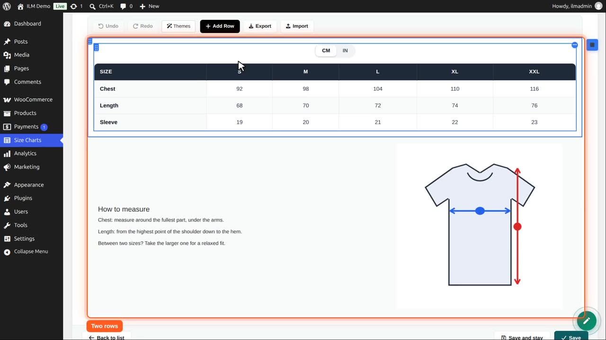
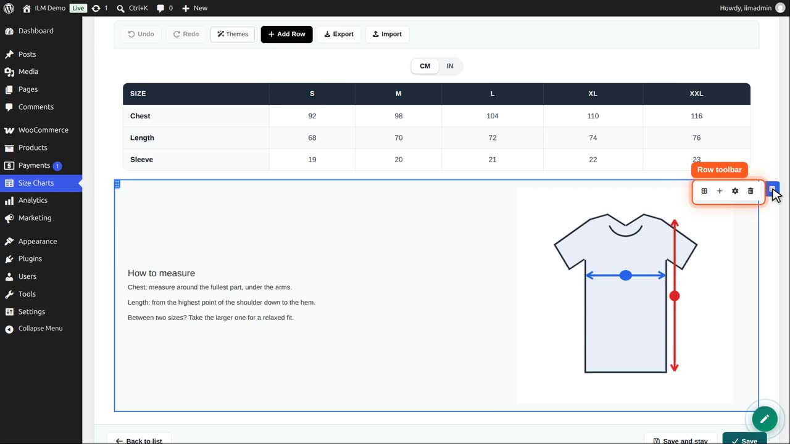
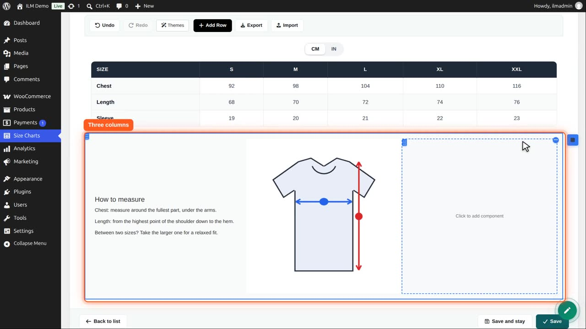
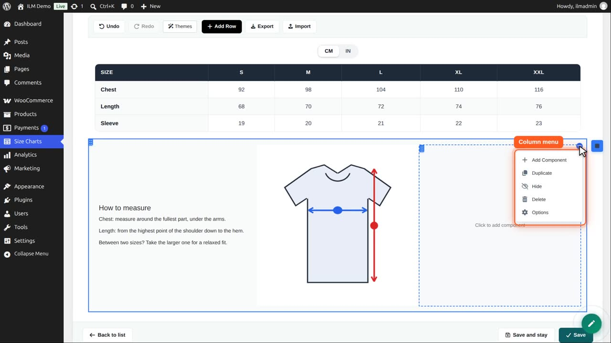
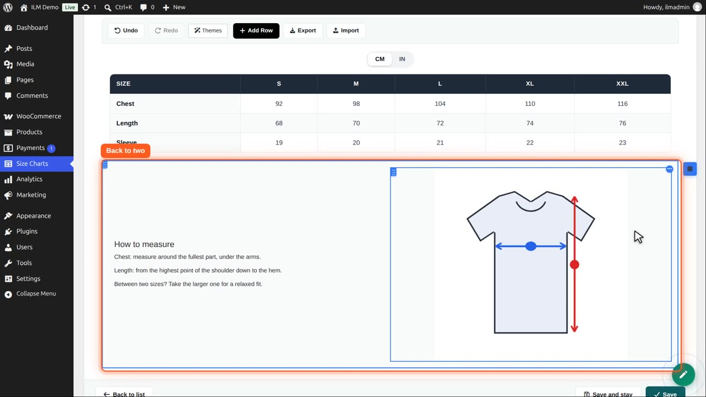
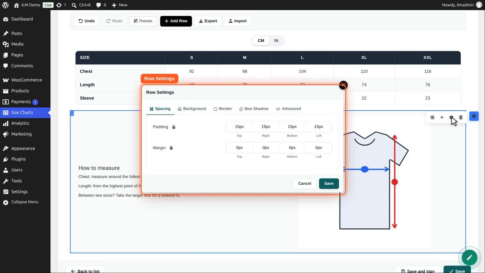
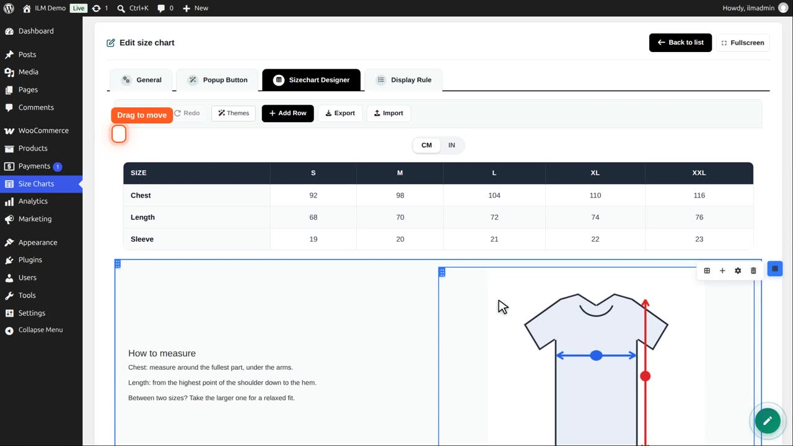

The designer builds the chart itself. A chart is made of rows; each row has one or more columns, and each column holds components. What you see in the designer is what the shopper sees.
Point at a row or a column to see its tools: drag it to another place, open its settings (spacing, background, border, shadow, column width), or delete it; a column can also be duplicated or hidden. Deleting asks first when the row or column holds components, and a row always keeps at least one column.
Edit a chart and open the Sizechart Designer. This chart has two rows: the table on top, and a row with the measuring tips and a picture.

Point at a row and click its blue button. The row toolbar opens: add a column, add a row, row settings, and delete the row.

Add Column puts a third column in the row. A row takes up to six columns, side by side; on phones they stack.

Each column has a menu: add a component, duplicate the column, hide it, delete it, or open its options.

We delete the empty column again. If a column has content, you are asked first.

Row settings set the spacing, the background colour or picture, the border and the shadow of the whole row. Columns have the same options.

The dotted handle at the top left drags a row up or down. Columns have their own handle.

Undo and Redo take back any change in the designer. Nothing is stored until you save the chart.